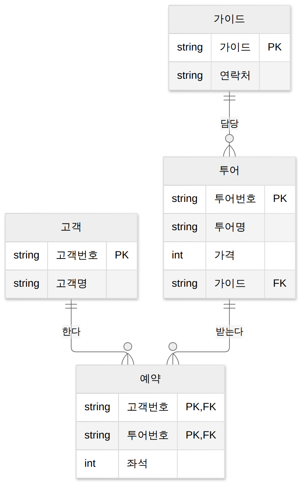

D050 · 길벗투어 큰 표 한 장이 왜 말썽인가 — 이상 현상·함수 종속·1NF~3NF 정규화
B3 어제 D049에서 길벗투어의 E-R 그림을 표로 옮겼어요. 그런데 마지막에 이런 예고가 있었죠 — “투어 개체에 가이드 연락처를 붙여 두었다면, 서하의 번호가 투어 행마다 한 번씩 적힌다.” 오늘은 그런 ‘큰 표 한 장’이 실제로 어떤 사고를 치는지 보고, 그 사고를 원리대로 막는 방법인 정규화를 1NF · 2NF · 3NF까지 손으로 해 봐요. 정규화 · 정규형은 최근 20회 시험에 20회 모두, 함수 종속 · 이상 현상은 19회 나온 2과목 최상위 단골이에요.
- 정규화의 목적(중복 최소화 · 이상 방지 · 구조 안정 · 재구성 감소)과 수행 시기(논리 설계)를 설명하고, “중복 활성화”“개념 설계 이전”이라는 틀린 설명을 가려낸다
- 같은 표에서 삽입 · 삭제 · 갱신 이상을 찾아내고, 검색 이상은 없는 말임을 안다
- 함수 종속 X → Y와 결정자를 읽고, 완전 · 부분 · 이행 함수 종속을 구별한다
- 암스트롱 공리(반사 · 첨가 · 이행)와 유도 규칙(분해 · 결합 · 의사이행)을 적용한다
- 1NF(원자값) → 2NF(부분 종속 제거) → 3NF(이행 종속 제거)를 작은 표에서 직접 해 보고, 각 단계의 조건을 섞은 선지를 가려낸다
0. 오늘의 지도 — 큰 표 한 장을 쪼개는 길
오늘 이야기는 한 방향으로 흘러요. 먼저 길벗투어 직원이 엑셀처럼 편하게 만든 예약전체 표 한 장이 있어요. 고객 · 투어 · 가이드 · 좌석이 한 행에 다 들어 있어서 조회는 편하지만, 지우고 고치고 넣을 때마다 말썽이 나요(이상 현상). 말썽의 뿌리를 찾으려면 “어떤 열이 어떤 열을 결정하나”(함수 종속)를 읽어야 하고, 그 종속을 종류별로 하나씩 떼어 내는 순서가 1NF → 2NF → 3NF예요. 그림 1이 그 길이에요.
사례 데이터는 이래요. 고객 셋(c1 민수 · c2 하린 · c3 지후), 투어 셋(t1 제주 올레 3일 · t2 부산 야경 2일 · t3 강릉 바다 1일), 가이드 둘(서하 · 도윤). 서하가 제주와 강릉을, 도윤이 부산을 맡아요. 예약은 여섯 건이고 기본키는 (고객번호, 투어번호)예요.
1. 장면 1 — 정규화는 왜, 언제 하나 기출 16회
정규화의 정의
정의: 정규화(normalization)는 관계형 데이터베이스에서 함수 종속을 기준으로 릴레이션을 더 작은 릴레이션으로 분해해, 데이터 중복을 최소화하고 삽입 · 삭제 · 갱신 이상이 생기지 않게 하는 과정이에요. 1970년대 초 관계형 모델을 만든 코드(E. F. Codd)가 1NF를 정의하고 이어 2NF · 3NF를 제안하면서 시작됐어요. 정규화된 결과가 만족하는 조건을 정규형(normal form)이라 하고, 1NF → 2NF → 3NF → BCNF → 4NF → 5NF로 갈수록 조건이 엄격해져요. 뒤 단계는 앞 단계의 조건을 모두 포함해요. 정리하면 정규화 개념의 핵심은 “한 표에는 한 주제의 사실만”이에요.
정규화에는 지켜야 할 약속이 하나 있어요. 무손실 분해 — 쪼갠 표들을 다시 조인하면 원래 표의 정보가 하나도 빠지거나 가짜로 늘지 않고 그대로 복원돼야 해요. 아무렇게나 자르면 조인할 때 없던 조합이 생기거나 정보가 사라져요. 함수 종속을 따라 “결정자와 그것이 결정하는 열”을 함께 떼어 내면 이 약속이 지켜진다는 것이 이론으로 증명돼 있어서(히스 정리), 정규화는 늘 함수 종속을 읽는 데서 시작해요.
정규화의 목적
정규화의 목적은 다섯 가지로 정리돼요. 첫째, 데이터 중복을 최소화해 같은 사실이 여러 곳에서 서로 다르게 기록될 위험을 줄여요. 둘째, 삽입 · 삭제 · 갱신 때 생기는 이상 현상을 최소화해 데이터 구조의 안정성을 높여요. 셋째, 어떤 릴레이션이라도 데이터베이스 안에서 표현할 수 있게 해요 — 사실마다 제 표가 있으니 새 종류의 사실도 담을 자리가 생겨요. 넷째, 새 데이터를 넣을 때 릴레이션을 재구성해야 하는 일을 줄여요. 다섯째, 표가 작고 의미가 분명해지니 효과적인 검색 알고리즘을 쓸 수 있어요. 코드 본인도 정규화의 목표로 “삽입 · 갱신 · 삭제 시의 원치 않는 종속 제거”와 “새 데이터 유형을 넣을 때 재구성 최소화”를 꼽았어요.
이사한 사람이 새 주소를 은행 · 쇼핑몰 · 학교 · 병원에 따로 다 적어 뒀다면, 이사 한 번에 하루가 통째로 날아가요. 하나라도 빠뜨리면 택배는 옛집으로 가요. 주소를 한 곳에만 두고 나머지가 그곳을 참조하게 만드는 것 — 그게 정규화가 하려는 일이에요.
| 정규화의 목적 (맞는 설명) | 목적이 아닌 것 (함정 선지) |
|---|---|
| 데이터 중복 최소화 → 불일치 위험 감소 | 중복 데이터의 활성화 · 일부러 복제해 안정성 확보 |
| 이상 현상 최소화 → 구조 안정성 최대화 | 이상 현상을 일으켜 무결성을 점검 |
| 어떤 릴레이션도 DB 안에서 표현 가능 | 분산된 종속성을 하나의 릴레이션에 통합 |
| 삽입 시 릴레이션 재구성 필요성 감소 | 개념적 설계 이전에 수행 |
| 효과적인 검색 알고리즘 생성 | 정규화할수록 조회 속도가 항상 빨라짐 |
정규화를 하는 시기
정규화는 논리적 설계 단계에서 해요. D049에서 본 논리 설계의 네 작업(스키마 변환 · 트랜잭션 인터페이스 · 정규화 · 평가와 정제) 중 세 번째예요. 순서를 생각하면 당연해요 — 쪼갤 표가 있어야 쪼개는데, 표는 개념 설계의 E-R 그림을 논리 설계에서 옮기면서 처음 생기니까요. 그래서 “정규화는 개념적 설계 단계 이전에 수행한다”는 문장은 틀려요. 보기 넷 중 이 문장을 보면 출제자가 미소 짓고 있다고 생각하세요. 반대 방향 작업도 있어요. 정규화로 표가 너무 잘게 쪼개져 조인이 많아지면, 성능을 위해 일부러 다시 합치거나 중복을 두는 반정규화(역정규화, denormalization — 정규화를 마친 엔티티·속성·관계를 성능 향상과 개발·운영 단순화를 위해 중복·통합·분리하는 모델링 기법)를 하는데, 이건 정규화의 목적이 아니라 정규화 뒤의 별도 선택이에요(B4에서 따로 배워요).
2. 장면 2 — 큰 표가 말썽 부리는 세 순간 (이상 현상) 기출 12회
이상 현상의 정의
정의: 이상 현상(anomaly)은 릴레이션에 불필요한 중복이 있을 때, 데이터를 넣거나 지우거나 고치는 순간 예상하지 못하게 생기는 곤란한 현상이에요. 원인은 한 표에 서로 다른 주제의 사실이 섞여 있는 것, 즉 기본키가 아닌 다른 열이 일부 열을 결정하는 부적절한 함수 종속이에요. 종류는 정확히 세 가지 — 삽입 이상 · 삭제 이상 · 갱신 이상이에요. 조회(SELECT)는 데이터를 바꾸지 않으니 “검색 이상”이라는 것은 없어요.
예약전체 표는 모든 서류를 한 파일에 철해 둔 여행 가이드북 같아요. 필요한 정보를 한 번에 펼쳐 볼 수는 있지만, 한 장을 빼면 그 뒷면에 적힌 다른 정보까지 같이 찢겨 나와요. 그림 3에 세 가지 사고가 날 자리를 색으로 표시했어요.
삭제 이상
정의: 삭제 이상은 어떤 정보 하나를 지웠는데 의도하지 않은 다른 정보까지 함께 지워지는 현상이에요(연쇄 삭제). 하린이 강릉 예약을 취소하면 그 행을 지워야 하는데, 강릉 투어를 예약한 사람이 하린뿐이라 “t3는 강릉 바다 1일, 98,000원, 가이드 서하”라는 투어 정보 자체가 표에서 사라져요. 투어는 계속 판매 중인데 회사 DB에서는 없어진 거예요.
결과는 t1 제주 · t2 부산 두 줄뿐이에요. 예약 한 건을 지웠더니 투어 한 종류가 통째로 증발했어요.
갱신 이상
정의: 갱신 이상은 같은 사실이 여러 행에 중복돼 있어서, 일부 행만 고치면 데이터끼리 모순(불일치)이 생기는 현상이에요. 서하의 연락처는 서하가 맡은 투어의 예약 행마다, 즉 4행에 적혀 있어요. 번호가 바뀌었는데 직원이 “제주 투어 행”만 고치면 4행 중 3행만 새 번호가 되고 강릉 행에는 옛 번호가 남아요. 이제 서하의 번호는 두 개이고, 어느 것이 맞는지 표만 봐서는 알 수 없어요.
결과는 010-1111이 1행, 010-9999가 3행 — 한 사람에게 번호가 두 종류예요. 이 표에서 서하 번호를 제대로 바꾸려면 “서하가 나오는 모든 행”을 찾아 고쳐야 하고, 행이 수천 개라면 빠뜨릴 확률도 그만큼 커져요.
삽입 이상
정의: 삽입 이상은 어떤 정보를 넣고 싶은데, 그와 상관없는 다른 정보가 아직 없어서 넣을 수 없거나 원치 않는 값(NULL · 가짜 값)까지 함께 넣어야 하는 현상이에요. 새 투어 ‘경주 야행 1일’을 예약 받기 전에 먼저 상품으로 등록하려 해요. 그런데 이 표의 기본키는 (고객번호, 투어번호)라서, 아직 예약한 고객이 없으면 고객번호 칸을 채울 수 없어요. 기본키의 어떤 부분도 NULL일 수 없다는 개체 무결성(D043) 때문에 DB가 행을 거부해요.
이 상자는 일부러 오류가 나요. PostgreSQL은 기본키 열에 NULL을 허용하지 않아서 “null value … violates not-null constraint”로 거부해요. 꼼수로 ‘가짜 고객 c0’을 만들어 넣을 수도 있지만, 그러면 고객 수를 세는 모든 쿼리가 틀려져요.
| 이상 | 무엇을 하려다 | 무슨 일이 | 길벗투어 예 |
|---|---|---|---|
| 삽입 이상 | 한 가지 사실을 넣으려다 | 관계없는 다른 값이 없어서 못 넣음 | 예약 없는 경주 투어 등록 불가 |
| 삭제 이상 | 한 가지 사실을 지우려다 | 다른 사실까지 함께 사라짐(연쇄 삭제) | 하린 예약 취소 → 강릉 투어 소멸 |
| 갱신 이상 | 중복된 값 일부만 고쳐서 | 같은 사실이 서로 다른 값(불일치) | 서하 연락처가 두 종류 |
| (검색 이상) | — 이런 이상은 없음 — | 조회는 데이터를 바꾸지 않음 | 선지에 나오면 가짜 |
| 고객 | 투어 | 가이드 | 연락처 |
|---|---|---|---|
| 민수 | t1 제주 | 서하 | 1111 |
| 하린 | t3 강릉 | 서하 | 1111 |
| 지후 | t2 부산 | 도윤 | 2222 |
| … | (6행) |
① 출발점은 예약전체 6행이에요. 한 행에 고객 · 투어 · 가이드 · 예약이라는 네 가지 사실이 같이 들어 있어요.
| 고객 | 투어 | 가이드 | 연락처 |
|---|---|---|---|
| 하린 | t3 강릉 | 서하 | 1111 |
② 삭제 이상. 하린이 강릉 예약을 취소해서 이 행을 지우면, 강릉 투어를 하는 예약이 하나뿐이었기 때문에 “t3 = 강릉 바다 1일, 98,000원”이라는 투어 정보까지 표에서 사라져요.
| 가이드 | 연락처 | 행 수 |
|---|---|---|
| 서하 | 010-9999 | 3 |
| 서하 | 010-1111 | 1 |
③ 갱신 이상. 서하의 번호가 바뀌어 t1 행만 고쳤더니, 강릉 행은 옛 번호 그대로예요. 같은 사람에게 연락처가 두 개 생겼고, 어느 쪽이 맞는지 표만 봐서는 몰라요.
| 고객 | 투어 | 가이드 | 연락처 |
|---|---|---|---|
| NULL | t4 경주 | 도윤 | 2222 |
④ 삽입 이상. 새 투어 ‘경주 야행’을 예약 받기 전에 먼저 등록하려 해요. 그런데 기본키의 절반인 고객번호를 채울 값이 없어서 DB가 행을 거부해요.
| 이상 | 공통 뿌리 |
|---|---|
| 삭제 · 갱신 · 삽입 | 한 표에 서로 다른 사실이 함께 들어 있다 |
⑤ 세 가지는 따로 생긴 병이 아니에요. 모두 “투어에 대한 사실, 가이드에 대한 사실이 예약 행에 얹혀 있다”는 한 가지 원인에서 나와요. 그래서 처방도 하나 — 사실마다 자기 표를 주는 것이에요.
3. 장면 3 — 이상 현상의 뿌리: 함수 종속 기출 19회
함수 종속(X → Y)과 결정자
정의: 릴레이션 R의 속성 집합 X, Y에 대해, X의 각 값에 연관된 Y의 값이 시간에 관계없이 항상 하나일 때 Y는 X에 함수적으로 종속(functionally dependent)된다고 하고 X → Y로 표기해요. 이런 관계를 함수적 종속(함수 종속)이라 불러요. 같은 X 값을 가진 두 행은 반드시 같은 Y 값을 가져야 한다는 뜻이에요. 화살표 왼쪽 X를 결정자(determinant), 오른쪽 Y를 종속자(dependent)라고 해요. 수학의 함수 y = f(x)가 x 하나에 y 하나를 대응시키는 것과 같은 모양이라 ‘함수’ 종속이에요.
예약전체 표에서 읽어 보면 이래요. 투어번호 → 투어명 · 가격 · 가이드(t1이면 늘 제주 올레 · 320,000원 · 서하), 가이드 → 가이드연락처(서하면 늘 010-1111), 고객번호 → 고객명, 그리고 (고객번호, 투어번호) → 좌석(누가 어느 투어를 예약했는지 둘 다 알아야 좌석 수가 정해짐). 결정자는 주민등록번호 같은 존재예요 — 번호만 알면 이름이 하나로 나오지만, 이름만 알아서는 번호를 맞힐 수 없어요(동명이인). 방향이 중요해서, 가이드 → 투어번호는 성립하지 않아요. 서하라는 값 하나에 t1과 t3 두 투어가 걸리니까요.
하나 더, 함수 종속은 지금 표에 보이는 데이터가 아니라 업무 규칙이에요. 오늘 데이터에 우연히 “고객명 → 고객번호”가 성립해 보여도, 내일 두 번째 민수가 가입하면 깨져요. 그래서 종속은 데이터를 보고 짐작하는 게 아니라 “이 회사에서 투어 하나에 가이드는 한 명인가?” 같은 규칙을 묻고 정해요. 데이터는 그 규칙을 검산하는 데 쓸 수 있어요 — 아래 상자처럼 같은 X인데 Y가 둘 이상인 경우를 세 보면 돼요.
결정자와 키의 관계도 정리해 둘게요. 후보키는 릴레이션의 모든 속성을 함수적으로 결정하는 최소 속성 집합이에요(D043). 즉 후보키는 언제나 결정자지만, 결정자가 언제나 후보키인 건 아니에요 — 가이드는 연락처를 결정하지만 예약전체의 키가 아니죠. 이렇게 “키가 아닌 결정자”가 표 안에 있는 것이 바로 이상 현상의 원인이고, 내일 BCNF가 이 문장을 그대로 조건으로 써요. 참고로 Y가 X의 일부인 종속(예: (고객번호, 투어번호) → 고객번호)은 늘 성립하는 당연한 종속이라 자명한(trivial) 종속이라 부르고 정규화에서는 따지지 않아요.
결과는 투어번호 → 투어명 0건, 가이드 → 가이드연락처 0건, 가이드 → 투어번호 1건(서하)이에요. 앞의 둘은 데이터가 규칙과 맞고, 마지막은 방향을 거꾸로 하면 성립하지 않는다는 것을 숫자로 보여 줘요.
4. 장면 4 — 종속의 세 종류와 추론 규칙 기출 12회
완전 함수 종속과 부분 함수 종속
정의: 기본키가 여러 속성으로 된 복합키일 때, 어떤 속성이 기본키 전체에는 종속되지만 그 어떤 진부분집합에도 종속되지 않으면 완전 함수 종속(full functional dependency)이라고 해요. 반대로 기본키의 일부만으로도 값이 정해지면 부분 함수 종속(partial functional dependency)이에요. 예약전체의 기본키 (고객번호, 투어번호)에서 좌석은 고객과 투어를 둘 다 알아야 정해지니 완전 종속이고, 고객명은 고객번호만으로, 투어명 · 가격 · 가이드는 투어번호만으로 정해지니 부분 종속이에요.
부분 종속이 왜 말썽인지는 장면 2에서 이미 봤어요. 투어명이 키의 절반(투어번호)에만 기대고 있으니, 그 투어를 예약한 사람 수만큼 투어명이 반복되고, 마지막 예약이 지워지면 투어명도 사라져요. 키의 일부에만 붙어 있는 속성은 사실 그 일부를 키로 하는 다른 표의 주인이 따로 있다는 신호예요. 기본키가 속성 하나뿐인 표에는 “일부”가 없으니 부분 종속도 생길 수 없다는 점도 알아 두면 2NF 판정이 빨라져요.
이행적 함수 종속
정의: 릴레이션에서 X → Y이고 Y → Z인데 Y → X는 성립하지 않을 때, Z가 X에 Y를 거쳐 종속되는 X → Z를 이행적 함수 종속(transitive functional dependency)이라고 해요. 기호로는 “A → B, B → C이면 A → C”예요. 예약전체(나중엔 투어 표)에서 투어번호 → 가이드, 가이드 → 가이드연락처이므로 투어번호 → 가이드연락처는 이행 종속이에요. 연락처는 투어에 대한 사실이 아니라 가이드에 대한 사실인데, 가이드를 거쳐 투어 행에 얹혀 있는 거예요.
이행 종속은 소문의 전달 경로와 비슷해요. “t1 투어 → 서하 담당 → 서하 번호는 1111”이라는 한 다리 건너 안 사실을 투어 행에 직접 적어 두면, 서하 번호가 바뀔 때 그 소문을 전해 들은 모든 행을 찾아다녀야 해요. 원래 출처(가이드 표) 한 곳에만 적고 필요할 때 물어보면 되는 일이에요.
함수 종속 추론 규칙 — 암스트롱 공리
책 밖 보충 수험서에는 이행 규칙 한 줄만 나오지만, 기출 오답 선지에 분해 · 반사 · 결합이 함께 나오므로 이름과 모양을 정리해 둬요. 정의: 함수 종속 추론 규칙은 이미 알고 있는 함수 종속들에서 새 함수 종속을 논리적으로 이끌어 내는 규칙이에요. 1974년 암스트롱(W. Armstrong)이 정리한 기본 세 규칙을 암스트롱 공리라 하고, 이 셋만으로 성립하는 모든 종속을 빠짐없이(완전성), 그리고 틀린 종속은 하나도 없이(건전성) 이끌어 낼 수 있어요. 나머지 규칙은 이 셋을 조합해 만든 유도 규칙이에요.
공리 셋은 이래요. 반사 규칙: Y가 X의 부분집합이면 X → Y(자명한 종속이 여기서 나와요). 첨가(증가) 규칙: X → Y이면 양쪽에 같은 Z를 붙여도 XZ → YZ. 이행 규칙: X → Y이고 Y → Z이면 X → Z. 유도 규칙은 분해 규칙(X → YZ이면 X → Y, X → Z — 오른쪽을 쪼갬), 결합(합집합) 규칙(X → Y, X → Z이면 X → YZ — 오른쪽을 합침), 의사 이행 규칙(X → Y이고 YW → Z이면 XW → Z)이에요. 이행 규칙과 이행 종속은 같은 모양이라서, 이행 종속을 찾는다는 건 곧 이행 규칙으로 X → Z를 끌어낼 수 있는 경로를 찾는 일이에요.
| 규칙 | 모양 | 길벗투어로 읽기 |
|---|---|---|
| 반사 (공리) | Y ⊆ X 이면 X → Y | (고객번호, 투어번호) → 투어번호 |
| 첨가 (공리) | X → Y 이면 XZ → YZ | 투어번호 → 가이드 ⇒ (투어번호, 고객번호) → (가이드, 고객번호) |
| 이행 (공리) | X → Y, Y → Z 이면 X → Z | 투어번호 → 가이드, 가이드 → 연락처 ⇒ 투어번호 → 연락처 |
| 분해 (유도) | X → YZ 이면 X → Y, X → Z | 투어번호 → (투어명, 가격) ⇒ 투어번호 → 가격 |
| 결합 (유도) | X → Y, X → Z 이면 X → YZ | 투어번호 → 투어명, 투어번호 → 가이드 ⇒ 투어번호 → (투어명, 가이드) |
| 의사 이행 (유도) | X → Y, YW → Z 이면 XW → Z | 고객번호 → 고객명, (고객명, 투어번호) → 좌석이라면 ⇒ (고객번호, 투어번호) → 좌석 |
5. 장면 5 — 1NF · 2NF · 3NF 손풀이 기출 16회
제1정규형(1NF) 기출 11회
정의: 릴레이션의 모든 속성의 도메인이 원자값(atomic value), 즉 더 쪼갤 수 없는 값 하나로만 이루어져 있으면 제1정규형이에요. 한 칸에 값을 여러 개 넣거나(“t1, t2”), 같은 종류의 열을 투어1 · 투어2 · 투어3처럼 반복해 두는 반복 그룹이 없어야 해요. 1NF로 만드는 방법은 여러 값이 든 칸을 행으로 쪼개는 것이에요 — 그러면 보통 기본키가 (고객번호, 투어번호)처럼 커져요.
길벗투어 직원이 처음 만든 메모 표는 고객마다 “투어목록” 칸에 쉼표로 투어 번호를 적은 모양이었어요(그림 7 위). 사람 눈엔 편하지만 “t1을 예약한 고객”을 찾으려면 문자열 검색(LIKE)을 해야 하고, 그러면 t12처럼 글자가 겹치는 번호까지 걸려 나와요. 쉼표 하나가 데이터를 메모로 만들어 버리는 거예요. 아래 상자에서 직접 비교해 보세요.
메모 표는 4명, 원자값 표는 3명이에요. LIKE는 t12의 앞 두 글자까지 t1으로 착각했어요. 한 칸에 값 하나면 = 하나로 정확히 찾을 수 있고, 인덱스도 제대로 탈 수 있어요. 예약전체 표가 바로 이 메모 표를 1NF로 만든 결과예요 — 그런데 장면 2에서 봤듯 1NF만으로는 이상 현상이 그대로예요.
제2정규형(2NF) 기출 11회
정의: 1NF를 만족하면서 부분 함수 종속을 제거해, 기본키가 아닌 모든 속성이 기본키 전체에 완전 함수 종속되는 릴레이션이 제2정규형이에요. “부분 종속 제거”와 “완전 함수 종속을 만족”은 같은 말의 앞뒤예요 — 부분 종속이 하나도 없으면 남은 건 모두 완전 종속이니까요. 만드는 방법은 키의 일부와 그 일부에 종속된 속성들을 떼어 새 표로 만들고, 원래 표에는 키 전체와 완전 종속 속성만 남기는 거예요.
예약전체에 적용하면 고객번호 → 고객명이 고객 표로, 투어번호 → 투어명 · 가격 · 가이드 · 가이드연락처가 투어 표로 나가고, (고객번호, 투어번호) → 좌석만 예약 표에 남아요(그림 8). 고객번호 · 투어번호는 예약 표에서 외래키가 되어 두 표를 가리켜요. 이제 투어는 예약이 없어도 투어 표에 존재할 수 있으니 삽입 · 삭제 이상은 풀렸어요. 하지만 투어 표 안에 아직 투어번호 → 가이드 → 연락처 사슬이 남아 있어서, 서하가 맡은 투어가 둘이면 서하 연락처가 여전히 두 번 적혀요.
제3정규형(3NF) 기출 16회
정의: 2NF를 만족하면서 이행적 함수 종속을 제거해, 기본키가 아닌 속성이 다른 비키 속성에 종속되지 않는 릴레이션이 제3정규형이에요. 만드는 방법은 이행 사슬 X → Y → Z에서 가운데 Y와 Y가 결정하는 Z를 떼어 Y를 기본키로 하는 새 표를 만들고, 원래 표에는 Y만 외래키로 남기는 거예요.
투어 표의 투어번호 → 가이드 → 가이드연락처에서 (가이드, 가이드연락처)를 가이드 표로 떼고, 투어 표에는 가이드 열만 외래키로 남겨요(그림 9). 서하의 연락처는 이제 딱 한 칸이에요. 결과는 고객 3 · 투어 3 · 가이드 2 · 예약 6행의 네 표이고(그림 11), D049의 변환 규칙으로 만든 길벗투어 표와 같은 모양이에요 — 처음부터 E-R 그림을 잘 그렸다면 변환 결과가 이미 3NF인 경우가 많다는 뜻이에요.
1 · 2 · 3NF를 한 문장으로 묶는 유명한 말이 있어요. “키가 아닌 모든 속성은 키에 대해, 키 전체에 대해, 그리고 오직 키에 대해서만 사실을 말해야 한다”(켄트의 격언). 키가 있어야 하고 칸마다 값 하나(1NF), 키의 일부가 아니라 전체(2NF), 다른 비키 속성이 아니라 오직 키(3NF)예요.

| 정규형 | 앞 단계 + 이것을 제거 | 판정 질문 | 길벗투어에서 떼어 낸 표 |
|---|---|---|---|
| 1NF | 반복 그룹 · 여러 값 칸 (원자값으로) | 한 칸에 값이 하나인가? | 예약메모 → 예약전체 |
| 2NF | 부분 함수 종속 | 비키 속성이 키 전체에 종속되나? | 고객 · 투어 분리 |
| 3NF | 이행 함수 종속 | 비키 속성이 다른 비키 속성에 종속되지 않나? | 가이드 분리 |
| 고객 | 투어목록 |
|---|---|
| 민수 | t1, t2 |
| 하린 | t1, t3 |
| 지후 | t1, t2 |
① 맨 처음 메모 상태예요. 한 칸에 투어 번호가 쉼표로 여럿 들어 있어서 원자값이 아니에요.
| 고객번호 | 투어번호 | … | 좌석 |
|---|---|---|---|
| c1 | t1 | … | 2 |
| c1 | t2 | … | 1 |
| … | (6행) |
② 1NF. 고객–투어 한 쌍을 한 행으로 쪼갰어요. 이게 예약전체 표예요. 키는 (고객번호, 투어번호)가 됐어요.
| 표 | 열 |
|---|---|
| 고객 | 고객번호, 고객명 |
| 투어 | 투어번호, 투어명, 가격, 가이드, 연락처 |
| 예약 | 고객번호, 투어번호, 좌석 |
③ 2NF. 키의 일부(고객번호)에만 붙은 고객명, 다른 일부(투어번호)에만 붙은 투어 정보를 떼어 각자 표로 보냈어요. 예약에는 키 전체가 필요한 좌석만 남아요.
| 표 | 열 |
|---|---|
| 투어 | 투어번호, 투어명, 가격, 가이드 |
| 가이드 | 가이드, 연락처 |
④ 3NF. 투어 표 안에서 투어번호 → 가이드 → 연락처로 이어지던 사슬을 끊어, 가이드 표를 따로 만들었어요.
| 표 | 행 수 |
|---|---|
| 고객 | 3 |
| 투어 | 3 |
| 가이드 | 2 |
| 예약 | 6 |
⑤ 최종 네 장이에요. 중복이 거의 사라졌고, 남은 반복(예약 표의 고객번호 · 투어번호)은 표를 잇는 외래키라 꼭 필요한 반복이에요.
| 확인 | 결과 |
|---|---|
| 네 표를 조인한 행 수 | 6 (원래와 같음) |
⑥ 네 장을 다시 조인하면 원래 6행이 한 행도 늘거나 줄지 않고 돌아와요. 정보를 잃지 않고 쪼갰다는 뜻 — 무손실 분해예요.
고객 3 · 투어 3 · 가이드 2 · 예약 6, 그리고 조인 복원 6행이에요. 중복이 빠져 행 수는 줄었지만 조인하면 원래 정보가 고스란히 돌아오니 무손실 분해예요. 마지막으로 장면 2의 세 사고를 쪼갠 표에서 다시 일으켜 봐요.
| 시도 | 결과 |
|---|---|
| 하린의 강릉 예약 삭제 | 예약 1행만 삭제 · 투어 t3는 그대로 |
① 삭제 — 예약 표에서 한 행이 빠질 뿐, 강릉 투어는 투어 표에 남아요.
| 시도 | 결과 |
|---|---|
| 서하 연락처 변경 | 가이드 표 1행 수정 · 모든 투어에 반영 |
② 갱신 — 서하의 번호는 가이드 표에 한 번만 있으니 한 행만 고치면 끝이에요. 모순이 생길 자리가 없어요.
| 시도 | 결과 |
|---|---|
| 예약 없는 경주 투어 등록 | 투어 표에 1행 추가 성공 |
③ 삽입 — 투어 표의 키는 투어번호뿐이라 고객 없이도 등록돼요.
| 표 | 행 수 |
|---|---|
| 투어 | 4 |
| 예약 | 5 |
④ 세 번의 시도가 모두 의도한 만큼만 바뀌었어요. 실행 상자 ⑥에서 숫자로 확인해 보세요.
서하 번호 1종류(한 행만 고쳤는데 모든 투어에 반영), 강릉 투어 1(예약을 지워도 투어는 남음), 투어 4(경주 야행이 예약 없이 등록됨), 예약 5예요. 장면 2에서 사고를 친 세 쿼리가 이번엔 딱 의도한 만큼만 바꿨어요.
6. 장면 6 — 3NF 다음 이야기와 헷갈리는 짝
그럼 3NF면 끝일까요? 대부분은 그래요. 정규형 이론을 정리한 자료들도 “3NF를 만족하는 릴레이션은 대부분 삽입 · 삭제 · 갱신 이상이 없다”고 말하고, 수험서도 4 · 5정규형은 특수한 경우에만 필요해서 현업에서는 보통 3NF까지 한다고 적어요. 다만 “특수한 경우”가 시험에는 꼬박꼬박 나와요. 키가 아닌 속성이 키의 일부를 결정하는 경우(BCNF), 한 예약에 서로 독립인 값 목록이 둘 붙는 경우(4NF, 다치 종속), 세 표로 나눠야만 손실 없이 쪼개지는 경우(5NF, 조인 종속)가 내일 D051의 재료예요. 반대 방향도 기억해 두세요. 쪼갤수록 조인이 늘어 조회가 느려지면, 설계자는 일부러 중복을 되살리는 반정규화를 고민해요. 정규화는 “중복을 없애는 게 목적”이고, 반정규화는 “성능을 위해 중복을 감수하는 선택”이에요.
오늘 장면에서 설명한 짝을 질문 하나씩으로 갈랐어요.
| 헷갈리는 짝 | 가르는 질문 | 예 → / 아니오 → |
|---|---|---|
| 완전 vs 부분 함수 종속 | 키의 일부만 알아도 값이 정해지나? | 부분 / 완전 |
| 부분 vs 이행 함수 종속 | 결정자가 키의 일부인가, 키가 아닌 속성인가? | 키의 일부 = 부분 / 비키 속성 = 이행 |
| 2NF vs 3NF 조건 | 떼어 내는 게 부분 종속인가? | 2NF / (이행 종속이면) 3NF |
| 1NF 조건 vs 2NF 조건 | 원자값 이야기인가? | 1NF / (완전 종속이면) 2NF |
| 이상 현상 3종 vs 검색 이상 | 데이터를 바꾸는 작업인가? | 삽입 · 삭제 · 갱신 / 검색 이상은 없음 |
| 삭제 이상 vs 갱신 이상 | 지우다가 더 지워졌나, 고치다가 모순이 생겼나? | 삭제 / 갱신 |
| X → Y 방향 | 같은 X 값에 Y가 하나뿐인가? | X → Y 성립 / 아니면 불성립(역은 따로 확인) |
| 이행 규칙 vs 분해 · 결합 | 화살표 두 개를 잇나, 오른쪽을 쪼개거나 합치나? | 이행 / 분해 · 결합 |
| 정규화 vs 반정규화 | 중복을 줄이나, 성능을 위해 중복을 두나? | 정규화 / 반정규화(정규화 목적 아님) |
| 결정자 vs 후보키 (내일 예고) | 그 결정자가 모든 속성을 결정하나? | 후보키 / 아니면 BCNF 위반 후보 |
표 아래쪽 두 줄은 내일로 이어지는 다리예요. “키가 아닌 결정자”가 남아 있으면 3NF여도 이상 현상이 생길 수 있고, 그걸 잡는 게 BCNF예요.
지난번 헷갈렸던 개념 다시 한 번
확인 문제 4~8번은 오늘 범위와 상관없는, 예전에 틀렸던 개념의 재확인이에요. 원래 문제와 문장 · 보기 순서를 바꿨어요. 짧게 짚고 넘어갈게요.
| 개념 | 헷갈린 짝 | 가르는 질문 |
|---|---|---|
| EAI 메시지 버스(ESB)형 | 허브 앤 스포크 | 중앙 허브 하나가 중계하나(허브), 공용 버스에 모두 붙나(버스 · 확장성 · 대용량)? |
| 델파이 비용 산정 | 전문가 감정 | 여러 전문가가 익명으로, 조정자를 통해 반복해 합의하나? |
| DRM 패키저 | 클리어링 하우스 | 콘텐츠를 메타데이터와 함께 암호화해 묶나(패키저), 키 · 라이선스 · 정산을 관리하나(클리어링 하우스)? |
| SSL/TLS | S-HTTP · IPSec | 전송 계층 위에서 세션 전체를 암호화하나(SSL/TLS), 메시지 단위(S-HTTP)나 네트워크 계층(IPSec)인가? |
| 삽입 정렬 최선 O(n) | 선택 · 힙 정렬 | 거의 정렬된 입력에서 비교가 거의 없이 끝나나? 선택은 항상 O(n²), 힙은 O(n log n) |
참고: 수제비 2027 기본서의 데이터베이스 정규화 해설 범위(정규화 목적 · 이상 현상 · 함수 종속 · 정규형 단계)를 확인하고, Database normalization · Functional dependency · Armstrong’s axioms · Third normal form 위키 문서와 대조해 내 말과 길벗투어 사례로 새로 썼어요. 암스트롱 공리의 유도 규칙은 책 밖 보충이에요. 실행 상자 결과는 브라우저 안 PostgreSQL(PGlite) 기준이에요.
확인 문제
1~3번은 오늘 범위, 4~8번은 지난 오답 재확인이에요.
- 데이터베이스 설계에서 정규화(normalization)를 소개한 다음 네 문장 가운데 틀린 것은?
- 어느 학원의 수강 릴레이션은 {학생번호, 강좌번호}가 기본키이고 제1정규형을 만족한다. 이 릴레이션이 제2정규형이 되기 위한 조건은?
- 쇼핑몰 DB에서 ‘주문번호 → 고객번호’와 ‘고객번호 → 고객등급’이 성립할 때 ‘주문번호 → 고객등급’도 성립한다고 이끌어 내는 함수 종속 추론 규칙은?
- 기업 내 여러 시스템이 하나의 공용 통신 채널에 함께 연결되어 메시지를 주고받는 EAI 구축 유형으로, 시스템을 새로 붙이기 쉽고 대용량 처리에 유리한 것은?
- 전문가 여러 명이 서로 누구인지 모른 채 각자 의견을 내고, 조정자가 의견을 모아 다시 돌려주는 과정을 반복해 합의에 이르는 비용 산정 기법은?
- DRM 구성 요소 중, 배포할 콘텐츠를 메타데이터와 함께 암호화해 하나의 단위로 묶는 역할을 하는 것은?
- 전송 계층 위에서 클라이언트와 서버 사이의 세션 전체를 암호화하며, HTTPS의 바탕이 되는 보안 프로토콜은?
- 입력 데이터가 이미 거의 정렬되어 있을 때 최선의 경우 시간 복잡도가 O(n)이 되는 정렬 알고리즘은?
고른 뒤 답안 복사 → 디스코드 공부 채널에 붙여넣기 하면 돼요.
답장: 정처기 D050: 1)번호 2)번호 3)번호 4)번호 5)번호 6)번호 7)번호 8)번호